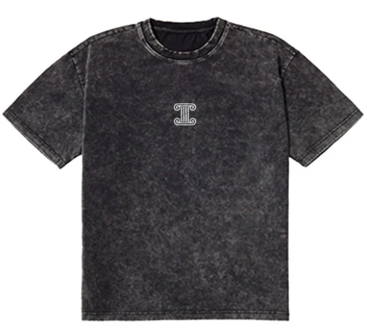

Titanfit
La camiseta fitness TitanFit es una prenda diseñada específicamente para actividades físicas intensas, ofreciendo un equilibrio óptimo entre comodidad, estilo y funcionalidad. Fabricada con materiales de alta calidad y tecnología de punta, la camiseta TitanFit proporciona soporte muscular, transpirabilidad y libertad de movimiento, ayudando a maximizar el rendimiento durante el entrenamiento. Su diseño ergonómico y ajuste personalizado la convierten en una opción ideal para aquellos que buscan mejorar su experiencia de ejercicio y alcanzar sus metas fitness con confianza.
Precio: 25,47 €